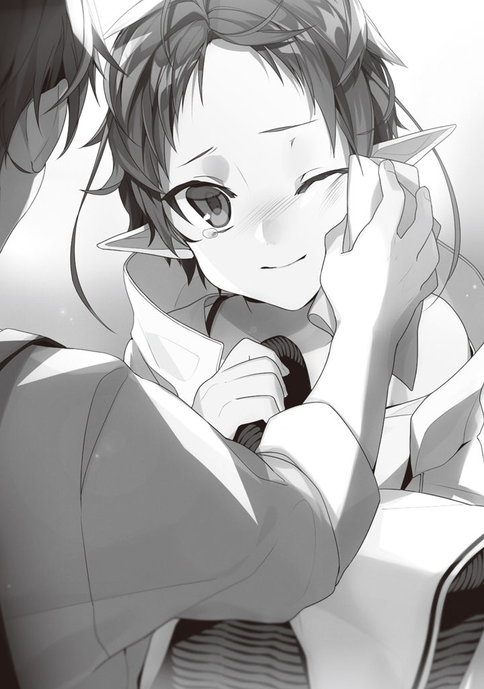

Volume 1 · Unofficial AI-assisted fan translation
Episode 7: Friend
I decided to try going outside.
Roxy had gone to all the trouble of getting me outside. I won't let that go to waste.
"Father. May I go out and play?"
One day, plant encyclopedia in hand, I asked Paulo that.
Kids this age, you take your eyes off them for a second and they wander off somewhere.
It's only the neighborhood, but if I went out without a word, my parents would probably worry: that was the thinking behind it.
"Out? To play? Not in the yard?"
"Yes."
"O-oh, sure. Of course."
Permission came, just like that.
"Come to think of it, I never did give you any free time, did I. We had you learning magic and swordsmanship at the same time because we parents wanted it, but a kid needs to play, too."
"I am grateful that you arranged for me to meet such a good teacher."
I'd taken him for a strict, education-obsessed dad, but apparently his thinking is fairly flexible.
I'd even considered the possibility he'd tell me to do swordsmanship all day long, so this was an anticlimax.
He goes by feel, but apparently he doesn't buy into the guts-and-grit school of training.
"Still, you, going outside, huh. I thought you were a sickly kid, but time sure flies."
"You thought I was sickly?"
That's news to me. I've never even been sick...
"You never cried at all, see."
"I see. Well, if I'm fine now, what's the problem? I'm growing up into a sturdy, charming son. Streeetch."
With that, I tugged my cheeks out and pulled a funny face for him, and Paulo gave a wry smile.
"That un-kidlike side of you is exactly what worries me, though."
"What is there to complain about in an eldest son who has his act together?"
"No, it's not that I have complaints, but..."
"You're welcome to grumble away with a sour face and tell me to become someone more fitting as heir to the Greyrat house, you know?"
"Not to brag, but when your dad was about your age, he was a little hellion who was crazy about flipping up girls' skirts."
"Skirt-flipping, is it."
So they have that in this world too.
Also, he just called himself a hellion, this guy.
"If you want to be someone fitting for the Greyrat house, bring home at least one girlfriend."
What? So that's the kind of family line we are?
Weren't we supposed to be knights guarding the frontier, minor nobility?
No pedigree to keep up, nothing? No, we're only minor, when it comes down to it. Figures.
"Understood. Then I shall be off to the village to find some skirts to flip."
"Ah, be nice to girls, now. And, just because you're stronger and can use magic, don't go throwing your weight around. A man's strength isn't there for throwing his weight around."
Ooh, now that was a good line.
Nice, nice. I'd love for my siblings from when I was alive to hear that.
That's right: power's meaningless if you just swing it around.
Paulo's got a point. I'm with him on that, too.
"I understand, Father. Strength is there for when you want to look cool in front of girls, right?"
"...No, that's not it."
Huh? Wasn't that where the conversation was headed?
My bad, my bad. Tehepero.
"Just kidding. It's there to protect the weak, right?"
"Mm, exactly right."
After that conversation, with the plant encyclopedia tucked under my arm and the staff Roxy gave me stuck through my belt, I was thinking, okay, let's head out, when it suddenly occurred to me, and I turned around.
"Oh, right, Father. I expect I'll be going out every so often from now on, but whenever I go out, I will be sure to tell someone in the house, and I will not skip a single day of sword and magic training. I will be home before the sun goes down and it gets dark, and I will not go near dangerous places."
"Oh... right."
I left him with that, just in case.
For some reason, Paulo looked dumbfounded.
By rights, that's supposed to be your line, pal, you know?
"Well then, I'm off."
"...Have a good time."
And so, I left the house.
A few days passed.
Outside isn't scary. So far, so good. I'd even gotten to where I could trade breezy hellos with the people I passed.
People knew who I was. As Paulo and Zenith's kid, as Roxy's pupil.
To someone I was meeting for the first time: a greeting and a self-introduction. To someone the second time around: hello. Everyone greeted me back with a smile.
It's been ages since I felt this sunny.
More than half of it is thanks to how well known Paulo and Roxy are. The rest is all thanks to Roxy.
In other words, it's mostly thanks to Roxy.
I shall cherish the panties.
So.
My main purpose in going outside was, mainly, to walk on my own two feet and learn the lay of the land.
As long as I know the lay of the land, I won't get lost even if I suddenly get thrown out of the house.
At the same time, I also wanted to do some research on the plant life.
I happened to have the plant encyclopedia, too, so: things you can eat, things you can't, things that are medicine, things that are poison... Better to get to where I can tell each of them apart.
That way, even if I suddenly get thrown out of the house, I won't have trouble finding food.
Roxy only taught me the gist, but apparently this village grows wheat, vegetables and the raw materials for perfume.
The perfume material, the batirus flower, is a plant that looks a lot like lavender.
It's pale purple, and you can even eat it, supposedly.
Focusing on eye-catching stuff like that, I checked every plant I laid eyes on against the plant encyclopedia, one after another.
That said, the village isn't all that big, and it's not like there are any remarkable plants.
Before many days had passed, my range had widened, and I'd started heading toward the forest.
Because the forest has lots of plants.
"If I remember right, the forest is dangerous because mana pools form there easily."
An environment where mana pools form easily has a high rate of monsters appearing.
Since monsters are what get born from mutations caused by mana.
Why mana pools form so easily in forests, I couldn't tell you, though.
Mind you, monsters rarely show up around here to begin with, and monster hunts are held regularly, so it's relatively safe.
A monster hunt is just what it sounds like.
Once a month, apparently, the menfolk, knights, hunters, the village watch and so on, all turn out together, go into the forest and wipe out the monsters.
Even so, apparently, a vicious monster can suddenly appear deep in the forest.
I may have learned magic and gained the power to fight, a little.
But, at heart, I'm a shut-in who's barely ever even been in a fight.
I mustn't get full of myself.
I've got no real combat experience, either, and if I get carried away and screw up, it'll be too ugly to look at.
I've seen plenty of guys die just like that... in manga.
Besides, I'm not the hot-blooded type to begin with. I think avoiding fights as much as humanly possible is best.
If I run into a monster, I'll run home and report it to Paulo.
Yeah, let's do that.
Thinking about all that, I was climbing a small hill.
At the top of the hill, a single big tree stood all by itself.
The biggest tree around here.
To check the lay of the village I'd walked on my own, a high place is best.
While I was at it, I meant to find out what that tree was, the biggest one around here.
And, just then.
"Demons stay outta the villaaage!"
A voice like that came to me, carried on the wind.
That tone of voice brought an ugly memory back to life.
My high school life, the reason I became a shut-in.
The nightmare of the days when they nicknamed me "Foreskin."
The tone they used when they called me by that nickname was just like the tone I heard now.
The tone people use when they outnumber someone obviously beneath them and torment him.
"Go awaaay!"
"Take thiiis!"
"All riiight, direct hiiit!"
When I looked, there was a field that the rain the other day had turned into something like a mud swamp.
In it, three kids who'd gotten mud all over themselves were throwing mud at a single boy walking along the road.
"Hit him in the head, ten points!"
"Yeahhh!"
"I hit him! I hit him, I said!"
Ughhh. Gross, gross. Bullying, caught in the act. Guys like that think they can do whatever they want to someone as long as that someone's beneath them. They're the type who buy an airsoft gun and figure it's fine to shoot it at that someone. Even though it says right on it not to point it at people. It's because they don't see the other guy as a person. As a human being, that's unforgivable, man.
As for the boy, he should've just hurried away from there, but for some reason he was barely making any progress.
Looking closer, he was holding something like a basket against his chest, and hunching himself up small so the mud balls wouldn't hit it.
Which was why he couldn't get clear of the bullies' attacks.
"He's got somethin'!!"
"Is that demon treasure!?"
"Where'd ya steal it from!!"
"Hit that and it's a hundred points!!"
"Let's grab the treasure!!"
I ran toward the boy. As I ran, I made a mud ball with magic. And the instant I came into range: a full-power pitch.
"Bwuph."
"What the!?"
A direct hit to the face of the one who looked like the leader, the one who was a head bigger than the rest.
"Owww, it got in my eye."
"What's with you!!"
"Nobody asked you to butt in!!"
"You takin' the demon's side!?"
In an instant, the target had swung over to me. This kind of thing is the same in any world, huh.
"I'm not on the demon's side. I'm on the side of the weak."
I said it with my best smug face, but the boys came down on me with faces that said they were the ones in the right.
"Quit tryin' to act cool!!"
"You're the guy from the knight's place!!"
"A rich boy, huh!!"
Oh my, dear me. They've got me pegged.
"Is that okaaay!! A knight's kid doin' stuff like this!!"
"We're gonna tell everybody the knight's on the demons' side!!"
"Actually, let's go get our big brothers!!"
"Big brooother!! There's a weirdo heeere!!"
The children called for help!
But nobody appeared.
But, my legs froze!
Grrrgh, sure, there are three of them, but freezing up because some kids yelled at me? Pathetic.
So this is the curse of someone who got bullied into shutting himself in...
"Sh-shut up! Three of you ganging up to attack one person, you guys are the lowest!"
I got a "Huh?" look.
Th-that pisses me off.
"Look who's yellin', ya big stuuupid!!"
It pissed me off, so I threw one more mud ball. Missed.
"Why, you!!"
"Where's he keepin' all that mud!!"
"Who cares, hit him back!!"
It came back at me threefold. Making full use of the footwork Paulo taught me, and of magic: a dazzling dodge.
"C-can't hit him!!"
"Quit dodgin'!!"
Fuhahaha, it doesn't matter if they don't hit me!
For a while the three kept throwing mud balls, but once they figured out they couldn't hit me, they stopped, as if to say it had suddenly gotten boring.
"Aw, man!! This is so boring!!"
"Let's just go!!"
"Let's tell everybody the knight's kid was buddy-buddy with a demon!!"
It's not like we lost or nothin'. We just quit 'cause we got bored, that's all.
Tossing off parting shots in that tone, the three little shits took off for the far side of the field.
Yes! For the first time in my life, I beat the bullies!
N-not exactly somethin' to brag about.
Phew. Still, I'm just never gonna be good at fighting. Glad it didn't come to punches.
"Hey, you okay? Is your stuff all right?"
For starters, I turned around to the boy who'd been pelted with mud, and...
(Whoooa...)
There stood a boy so beautiful you'd never believe he was about my age.
Eyelashes awfully long for a child, a straight, clean line of a nose, thin lips, a jawline that sent a shiver down your spine. Skin like white porcelain—all of it, together with the look of a frightened rabbit on his face, gave off a beauty beyond words.
Dammit, if only Paulo had been more the pretty-boy type, then I'd...
No, Paulo's not to blame. Zenith's top-notch, too.
So this face is fine.
Compared to that face from when I was alive, all zits and subcutaneous fat, it's fine.
It's plenty good enough, yeah.
"Uh... uh-huh... I-I'm okay..."
The boy turned a frightened face toward me.
Just like a little animal; it brought out my protective instincts.
If there were a shotacon Onee-san around, one look and she'd be soaking wet.
But, at the moment, all that was ruined by the mud caked on him.
Clothes covered in mud. Mud stuck to half his face, and as for his head: solid mud.
You could even call it a miracle that he'd managed to protect the basket.
Nothing else for it.
"Here, put your stuff down there for a sec, and kneel in front of that irrigation ditch over there."
"Huh...? Huh...?"
The boy's eyes went round in a fluster, but for some reason he did just as he was told anyway.
Seems he's a kid who doesn't really push back against what people tell him.
Then again, if he were the kind of kid to push back, he'd have fought back against the bullying just now, too.
The boy was on all fours, in a pose like he was peering down into the ditch.
If there were a shotacon Onii-san around, one look and he'd be throbbing.
"Keep your eyes shut."
I tweaked the water's temperature by feel with fire magic.
Not too hot, not too cold: I made hot water at about 40 degrees.
Then I dumped it over the boy's head.
"Waah!!"
The boy panicked and tried to get away, but I grabbed him by the scruff of the neck and washed the mud off until he was clean.
He thrashed around at first, but once he got used to the water temperature, he went quiet again.
As for his clothes... they'd better get washed at home.
"Okay, that should about do it."
The mud was off, so I tweaked the wind by feel with fire magic, blowing warm air at him like a hair dryer while I carefully wiped the boy's face with a handkerchief.
And out came ears pointed like an elf's, and beautiful emerald-green hair that shone in the sunlight.
The instant I saw that color, Roxy's words came back to me.
'You must never go near a race that has emerald-green hair.'
Hm?
No, that wasn't quite it.
If I remember right...
'If a race has emerald-green hair and something like a red jewel set in their foreheads, never go near them.'
Right. I'm pretty sure that was it.
A race with something like a red jewel set in their foreheads, that's the one.

The boy's forehead, meanwhile: a pretty little white brow, nice and smooth.
Okay, safe.
He's not one of the dangerous Superd tribe.
"Th-thank you..."
Being thanked snapped me back to myself.
Hoo boy, went and scared me good, didn'tcha.
To get even, I launched into some advice, laying on the airs a little.
"Listen, you. Guys like that, if you don't hit back properly, they just get cockier."
"I can't win..."
"What matters is having the will to fight back."
"But, usually there's bigger kids there too... I don't wanna get hurt..."
I see.
So if he fights back, they call their buddies and beat him up good.
This kind of thing is the same in any world, huh.
Thanks to Roxy's hard work, it looks like the grown-ups have come around to accepting demons, but the kids aren't going along with it, I guess.
Kids are cruel little things.
They go and freeze out anybody who's even a little bit different.
"Must be rough for you, too. Getting bullied just because your hair's the same color as the Superd tribe's."
"A-aren't you... scared?"
"My teacher was a demon, after all. So what race are you?"
Roxy had said her Migurd tribe was close to the Superd tribe.
Maybe he was one of those kinds of races too.
That's what I was thinking when I asked, but the boy shook his head.
"...I dunno."
He doesn't know, huh.
At his age, maybe that's just how it is?
"What race is your dad?"
"...Just half Elf. The other half's human, they say."
"And your mom?"
"Human, but she's got a little bit of the beast races mixed in, they say..."
A half-elf and a quarter-beast-race?
And that makes hair like this...?
While I was thinking that, tears welled up in both of the boy's eyes.
"...So, I'm not a demon... Dad, says... but my hair color, it's not like Dad's, or like Mom's, either..."
The boy started to sniffle and cry, so I gave his head a there-there pat.
Still, a different hair color, that's a big problem.
Now there's the possibility his mom was cheating.
"Is it only your hair color that's different?"
"...My ears, too, they're longer than Dad's..."
"I see..."
Long-eared, green-haired demons... sounds like there'd be some of those somewhere.
Hmm, I don't really want to go poking my nose into other people's family business, but I used to be a bullied kid myself, so I want to do something for him. Getting bullied just because your hair's green is a crying shame.
The bullying I went through was partly a case of reaping what I'd sown.
But, this boy's case is probably different. Changing how you were born is impossible, no matter how hard you try.
Just because his hair came out a little bit green when he was born, getting pelted with mud balls in the street...
Ugh... just thinking about it, I'm about to leak urine.
"Is your dad good to you?"
"...Uh-huh. He's scary when he's mad, but if I'm good, he doesn't get mad at me."
"I see. And your mom?"
"She's nice."
Hm. Judging from his tone, both his father and his mother seem to be giving him plenty of love.
No, I can't know that without actually seeing it for myself.
"Okay, then, let's go."
"...Wh-where?"
"I'll tag along with you."
Follow the child, and the parent appears. The law of nature.
"...Wh-why, are you coming with me?"
"Nah, those guys from before might come back. I'll walk you. Are you going home? Or taking that somewhere?"
"Lunch... for my dad, I'm bringing it..."
So his dad was a half-elf.
Elves, as they show up in stories: long-lived, living closed-off lives, arrogant by nature, looking down on other races. Good with bows and magic, especially water and wind magic. Beyond that, about all there is: their ears are long, just like the name says.
According to Roxy, "That's mostly right, but they aren't particularly closed-off."
I wonder if this world's elves are mostly gorgeous men and women too. No, the idea that elves are mostly gorgeous is just a Japanese assumption. The elves in Western games had these overly pointy faces and didn't look gorgeous at all. A difference in taste between Japanese otaku and foreign normies, I guess.
Mind you, this boy's parents look like a sure bet for a gorgeous couple.
"Um... why, did you, protect me?"
The boy asked it timidly, with a gesture that stirred up the urge to protect him.
"My father told me to stand up for the weak."
"But... the other kids, might leave you out..."
I'm sure they will.
I helped a bullied kid, and then I got bullied—that's a story you hear all the time.
"Then you can play with me. We're friends starting today."
"Huh!?"
So, the two of us form a gang of our own.
The chain of bullying happens when the one who got helped betrays the helper. The one who got helped has to take responsibility and repay the favor of being helped. Mind you, in this boy's case the cause of the bullying runs a lot deeper, so I don't think he'll betray me and go over to the bullies' side.
"Oh, are you busy helping out at home or something?"
"N-no."
It hit me that I hadn't asked if he was free, but he shook his head hard, looking timid.
Oh yeah, that look. If there were a shotacon Onee-san around, one look and she'd be reeled in, hook, line and sinker.
Hm, this could be good.
With a face like that, he's gonna be a total chick magnet down the line. And if I hang out with him, his leftovers might trickle my way. My own face is probably nothing high-level, but when two guys stand side by side, if one of them is high-level, the other one looks halfway decent too.
The girls with a little less confidence are bound to set their sights on me.
Over a girl who comes on strong and full of herself, a slightly insecure girl is more my type.
This'll work. A pretty girl keeps an uggo next to her as a foil, to make herself shine. I'll do the reverse.
"Come to think of it, I never asked your name. I'm Rudeus."
"Syl...ph—"
He mumbled it so quietly that the second half was a little hard to catch, but, Sylph, huh.
"Now that's a nice name. Just like a wind spirit."
When I said that, Sylph's face went red, and he nodded, "Uh-huh."
Sylph's father was a looker.
Pointed ears, shining golden hair, slender, but not without muscle. A man worthy of the name half-elf, who seemed to have taken the best parts of elves and humans both.
He was keeping watch over the forest from a watchtower at the forest's edge, a bow in one hand.
"Dad, here, your lunch..."
"Oh, thanks as always, Luffy. Nobody picked on you today?"
"I'm okay, somebody helped me."
Sylph introduced me with a glance, so I gave a slight bow.
So Luffy's a pet name. Sounds like his arms and stuff might stretch.
If Sylph were as happy-go-lucky and as much of a law unto himself as that guy, he'd never have gotten bullied.
"Pleased to meet you. I'm Rudeus Greyrat."
"Greyrat... Could you be from Paulo-san's place?"
"Yes. Paulo is my father."
"Oh, I'd heard about you, but what a well-mannered boy. Oops, forgive me for not introducing myself sooner. I'm Rawls. Usually I hunt in the forest."
From what I heard, this was a watchtower to keep watch so monsters don't come out of the forest, and the men of the village take turns on watch around the clock. Naturally Paulo has shifts too, and that's where Rawls got to know him; they'd traded all kinds of advice about the kids they'd each had, apparently.
"My kid looks like this, but it's just a bit of a throwback, that's all. I'd like you to be friends with him."
"Of course. Even supposing Sylph were one of the Superd tribe, I would not change how I treat him. On my father's honor, even."
When I said that, Rawls let out a sound of admiration.
"Honor, at that age... Paulo-san's lucky to have such a bright kid. I envy him."
"A child who is bright when he's little will not necessarily be bright as an adult. It won't be too late to feel envious once Sylph has grown up, you know."
I put in a good word for Sylph.
"I see... Just like Paulo-san said."
"...What did my father say?"
"Apparently talking with you makes him lose confidence as a parent."
"I see. Then from now on, perhaps I'll get into a little more mischief and let him lecture me."
While we were talking like that, somebody tugged at the hem of my clothes. When I looked, Sylph was tugging my hem with his head down. Grown-up talk is boring for a kid, huh.
"Rawls-san. May the two of us go off and play for a bit?"
"Yes, of course. Just stay away from the forest."
That goes without saying, but...
Isn't that a little short on detail?
"On the way here, there was a hill with a big tree, so I expect we'll be playing around there. I will take responsibility for seeing Sylph home before dark. On your way home, please look toward the hill, and if he isn't there and hasn't come home either, there's a high chance he's been caught up in some kind of incident, so please search for him."
"Oh... right."
This is a world without cell phones, after all. Sticking to report-contact-consult to the letter is what matters.
You can't avoid every trouble. What matters is recovering fast.
This country seems to be pretty safe, but you never know where danger might be lurking.
Leaving a dumbfounded Rawls behind, we went back to the tree on the hill.
"So, what should we play?"
"I dunno... I've never played with a, f-friend..."
Sylph hesitated a little over the word "friend." He probably never had one before now.
Poor thing... Mind you, I never had any either.
"Yeah. Though, I was shut in at home myself until just recently. So, what kinds of games are we supposed to play."
Sylph fidgeted, pressing his hands together, and peeked up at me through his lashes.
We're about the same height, but he hunches his back, so he ends up looking up at me.
"Hey, why do you, say boku sometimes, and ore other times?"
"Huh? Oh. It's rude if you don't change it depending on who you're talking to. With people above you, you use keigo."
"Keigo?"
"The kind of words I was using a minute ago."
"Hmmm?"
Seems he didn't really get it, but everybody figures it out eventually.
That's what growing up means.
"Never mind that, that thing from before. Teach me."
"That thing from before?"
Sylph, eyes sparkling, explained with his hands and his whole body.
"Warm water goes sploosh out of your hands, and warm wind goes fwoosh."
"Ah. That."
The magic I used when I washed the mud off him.
"Is it hard?"
"It's hard, but anybody can do it if they practice... probably."
Lately my mana capacity has shot up so high that I can't tell how much mana I'm using, and on top of that, I don't know how much mana capacity people here basically have to begin with.
That said, it's just water heated with fire. Going chantless straight to hot water might be out of reach, but used as combined magic, anybody can reproduce it. So it's probably fine. Probably.
"All righty. Then starting today, it's special training!!"
And like that, Sylph and I played until the sun went down.
When I got home, Paulo was angry.
Hands on his hips in a way that said "I am angry," he stood planted in front of the door like a Nio guardian.
Now, what did I screw up again? The only thing I can think of is that he found the panties I've been keeping so carefully stored away...
"Father. I am home."
"Do you know why I'm angry?"
"I do not."
First, play dumb. If he hadn't found the pant... the sacred relic, I'd be stirring up a hornet's nest myself.
"Eto's wife came by a little while ago. Word is you hit Eto's boy, little Somal."
Eto, Somal. Who're those guys?
Names I'd never heard came up, and I thought it over.
Basically, all I do in the village is say hello.
When I give my name, they give theirs too, but among them, now, was there an Eto, or wasn't there...
Hm, wait a sec.
"Is this about today?"
"It is."
The only people I met today were Sylph, Rawls and the three little shits.
So Somal's one of the three little shits.
"I did not hit him. I only threw mud at him."
"Do you remember what Dad told you the other day?"
"That a man's strength isn't there for throwing his weight around?"
"That's right."
Aha.
I see. Come to think of it, as they left, they did say something about spreading it around that I was buddy-buddy with a demon.
What kind of lie they told to turn it into me hitting him, I don't know, but I guess they ran a smear campaign on me, more or less.
"I don't know what story you were told, Father, but..."
"Wrong!! When you've done something bad, the first thing you say is sorry!!"
He cut me off flat.
I don't know what story he was told, but apparently he's swallowed it whole.
This is a pain. In a situation like this, even if I say I helped Sylph while he was being bullied, it'll sound like a lie.
Still, I guess all I can do is explain from the beginning.
"Actually, I was walking along the road, and..."
"No excuses!!"
I was getting more and more irritated. Lies aren't even the issue; he doesn't seem to have any intention of hearing my side at all.
I could just go ahead and do a sorry for now, but I get the feeling that wouldn't be good for Paulo either.
I don't want the little brother or sister he'll probably get around to making someday to go through this kind of unfairness.
This way of scolding is no good.
"........."
"What is it, why aren't you saying anything?"
"Because if I open my mouth, you'll yell at me not to make excuses."
"What!?"
The corners of Paulo's eyes shot up.
"Shout the child down before he can say anything, and make him apologize. The way adults do things is so quick and so easy. How I envy you."
"Rudy!!"
Smack: a hot jolt ran across my cheek.
He'd hit me.
But, I'd seen it coming. Provoke him and you get hit: naturally.
So I dug in and held my ground. Getting hit, that's been, what, twenty years...
No, I got beaten to a pulp when I left the house, so five years.
"Father. Up until now, I have tried as hard as I can to be a good boy. I have never once gone against anything you or Mother told me, and whatever I was told to do, I believe I have given it my all."
"Th-that's got nothing to do with it."
Apparently Paulo hadn't meant to hit me, either.
He was visibly flustered.
Fine. All the better for me.
"No, it does. I have worked hard to put you at ease, to earn your trust. And you, Father, without hearing a single word of my side, swallowed whole the words of someone I don't even know, yelled at me, and on top of everything, even raised your hand to me."
"But, little Somal really was hurt..."
Hurt?
Didn't know about that. Did he do it to himself?
If so, he's like one of those guys who throw themselves at cars to cash in...
But too bad for you. I've got just cause on my side.
Not some cheap lie like an injury.
"Even supposing that injury were my fault, I would not apologize. I have not gone against anything you told me, Father, and I would hold my head high and say that I did it."
"...Hold on, what happened?"
Oh ho, now you're curious, huh? But you're the one who decided not to listen, pal.
"I thought you didn't want to hear any excuses?"
At that, Paulo's face twisted into a bitter look. Just one more push.
"Rest assured, Father. From next time on, if I see three people ganging up to attack one person who isn't fighting back, I shall ignore it. Better still, I shall step in myself to make it four against one. I shall proclaim far and wide that ganging up on the weak and tormenting them is the very pride and the family creed of the Greyrat house. And when I grow up, I shall leave this house and never call myself a Greyrat again. Because I would be ashamed to name myself a member of a family of such utter garbage, one that ignores real violence and allows violence with words."
Paulo was speechless.
His face went red, then pale; I could glimpse the struggle going on inside.
Will he get angry? Or do I need one more push?
You'd better drop it, Paulo, my man. I may not look it, but I'm a man who spent over twenty years weaseling out of arguments I could never win. Give me just one opening to cut in through, and I can drag it to a draw at the very least.
And this time, I've got perfect justice on my side.
You don't stand a chance.
"...I'm sorry. Dad was wrong. Tell me."
Paulo bowed his head.
Right. Digging in out of stubbornness only makes both sides miserable.
If you're wrong, you apologize. That's the way to go.
My anger soothed, I laid out the details of what had happened as objectively as I could.
I was climbing up the hill when I heard voices. Three kids in a fallow field were throwing mud at one kid walking along the road. After I threw a mud ball or two at them and talked them down, they cursed at me and went off somewhere. I washed the kid who'd been pelted with mud using magic, and we played together.
Along those lines.
"So, if anyone is going to apologize, this Somal-kun person needs to apologize to Sylph first. Wounds to the body heal quickly, but wounds to the heart do not heal so quickly."
"...You're right. Dad got it wrong. Sorry."
Paulo's shoulders slumped dejectedly.
Seeing that, I remembered what Rawls told me earlier in the day.
'Apparently talking with you makes him lose his confidence as a parent.'
Maybe Paulo wanted to show a fatherly side of himself by scolding me.
Though it looks like it didn't work out this time.
"There is no need to apologize. From now on too, if you think I'm in the wrong, please scold me without holding back. Only, it would help if you would hear my side as well. There will be times when I don't say enough, or when it sounds like nothing but excuses, but I do have something I'm trying to say, so I would appreciate it if you would try to understand what I mean."
"Yeah, I'll be careful. Not that you seem like you'd ever get anything wrong..."
"In that case, please take it as a lesson for when you scold the little brother or sister I'll have one of these days."
"...I'll do that."
Paulo said it with a self-mocking air, clearly down in the dumps.
Did I say too much? Losing an argument to your five-year-old son. Yeah. If it were me, I'd be crushed.
He's still young as fathers go, this guy.
"By the way, Father, how old are you now?"
"Hm? Twenty-four, why?"
"I see."
So he got married at nineteen and made me.
I don't know what the average marrying age in this world is, but monsters and wars and such seem to be everyday things, so maybe it's a reasonable age to marry.
A guy a full twelve years younger has gotten married, had a kid and is worrying over raising him. That alone, I'd say, leaves nothing where the old me, thirty-four, no fixed address, jobless, no work history, could beat him...
Eh, whatever.
"Father, may I bring Sylph over to the house sometime?"
"Huh? Oh, of course."
Satisfied with that answer, I went into the house together with my father.
I'm glad Paulo doesn't have any prejudice against demons.
★ Paulo's point of view ★
My son was angry.
My son, who until now had never shown much of anything you could call emotion, was quietly furious.
How did it come to this.
It all started in the early afternoon, when Eto's wife came storming into the house in a towering rage.
She had Somal with her, a kid known around the neighborhood as a little hellion, and there was a blue bruise at the corner of Somal's eye. I've been through my share of bloodbaths as a swordsman, so I could tell he'd gotten it from being punched.
The wife's story was all over the place, but to sum it up, my son had apparently hit little Somal.
Hearing that, I was relieved, deep down.
Most likely, he was out playing, saw Somal and his pals playing, and tried to get them to let him join in.
But, my son's not like other kids. He's a Water Saint-rank mage at that age.
He must've said something high and mighty, gotten pushback, and it turned into a fight.
My son's weirdly sharp and grown-up for some reason, but he's got his kid side, too.
Eto's wife was going red and then pale, trying to make a big fuss out of it, but it's just a kids' fight, when all's said and done. From the look of it, the injury won't leave a mark, either.
A scolding from me, and that's that.
Kids are bound to get into a fistfight or two, but Rudeus has more power than other kids. He's the pupil of Roxy, who became a Water Saint-rank mage at a young age, and his body has been trained under my instruction since he was three.
No doubt the fight was one-sided.
It looks like no harm was done this time, but if the blood rushes to his head and he snaps, he might go too far.
Besides, a smart kid like Rudeus should've had some way to deal with it without hitting little Somal.
I need to teach him that hitting is rash, something you have to think a lot harder about first.
Gonna have to come down on him a little hard.
That's what I'd been thinking, and yet, how did it come to this...
My son had no intention of apologizing at all, it seemed.
Far from it: he was looking at me like I was a bug.
Sure, from my son's side, he might think he fought on equal footing, but still, the strong have to be aware of their own strength.
Not to mention, he'd hurt somebody. Whatever else, I'll make him apologize. He's a smart one, my son. He might not accept it now, but he'll surely arrive at the answer on his own.
With that in mind, I tried to drive it home in a firm tone, and he threw a sarcastic dig back at me.
At that dig, I flared up before I knew it and hit him.
Right when I'd been trying to lecture him that the strong must be aware of their strength and not lightly use violence on those weaker than themselves.
And I went and hit him.
I thought, that one was my fault, but in the middle of lecturing him, I couldn't very well say so.
Telling him not to do the very thing I'd just done would carry no weight at all. While I was stumbling over my words, my son started saying, in a roundabout way, that he'd done nothing wrong, and then, if that wasn't good enough, that he'd leave home, even.
One harsh word calls for another, and I almost told him to get out, but I held it in.
This was where I had to hold it in.
After all, I myself had gotten sick of a strict father scolding me from on high in a stuffy house, and after a huge fight, stormed out of home.
I've got my father's blood in me. My stubborn, rigid father's blood, I've got it in me.
And so does Rudeus.
Look how stubborn he is. Rudeus is my kid, all right.
That day, I was told to get out this minute, and, one harsh word for another, I left home. Rudeus would leave. He said he'd leave once he grew up, but if he were told to get out this minute, he'd leave right away. He's got that in him, for sure.
A while after I set out on my travels, my father fell ill and died, I heard. Word on the wind is that right up to the brink of death, he regretted the fight we had that day.
When it comes to that, I've got my own share of guilt.
No, let me say it plainly: I regret it.
Going by that, if I told Rudeus to get out now and he really did leave, I'd regret it, no doubt about it.
Me, of course, and Rudeus would regret it too.
Hold it in. Didn't I learn that from experience?
And besides, didn't I decide it when my kid was born? That I wouldn't turn out like that father of mine.
"...I'm sorry. Dad was wrong. Tell me."
The apology came out on its own.
At that, Rudeus's face softened in an instant, and he explained it to me, calm and matter-of-fact.
Apparently, he'd been passing by when Rawls's kid was getting bullied, and he'd stepped in to help.
Far from hitting anybody, all they did was throw mud balls at each other; it wasn't even a fight, he said.
If that story's true, Rudeus did something he can hold his head high and be proud of. And yet, instead of being praised, he ended up getting hit without even being heard out.
Ah, it brings it all back.
When I was little, that kind of thing happened to me again and again. My father never listened, not once, and only ever blamed me for where I fell short. Every time, I'd be left feeling miserable.
I screwed up. So much for "I have to lecture him."
Haah...
Rudeus didn't blame me for any of it; in the end, he even comforted me. What a fine son. Too fine. Is he really my son? ...No, among the men Zenith might cheat with, there's nobody who could father a kid that gifted. Ugh, to think my seed was this top-notch...
Proud? More like my stomach hurts.
"Father, may I bring Sylph over to the house sometime?"
"Huh? Oh, of course."
But, for now, let me just be glad my son has made his first friend.